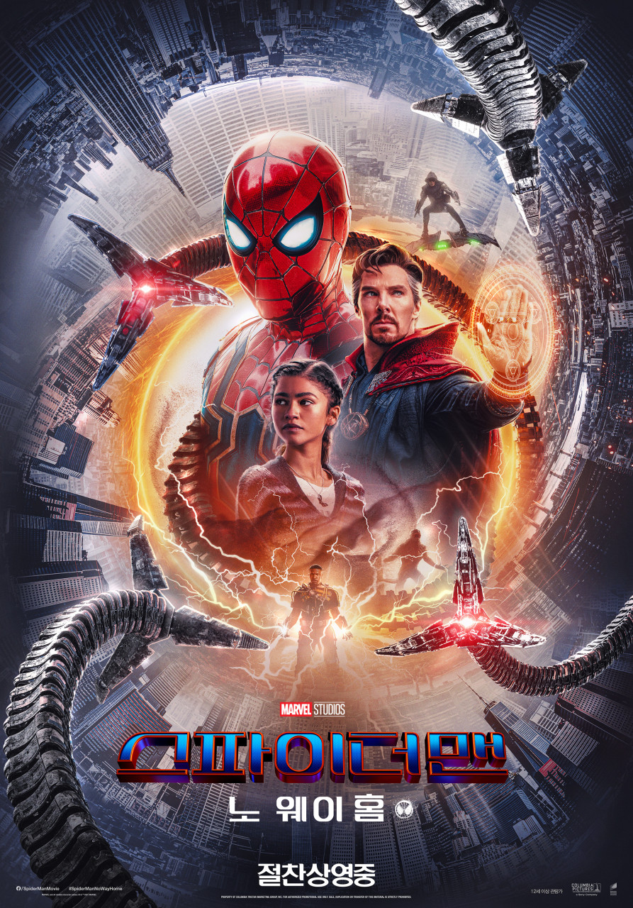

TITLE
스파이더맨: 노 웨이 홈
ORIGINAL TITLE
Spider-Man: No Way Home
GENRE
Action · Adventure · Superhero
MY RATING
★★★★★
My Review
시작부터 피터의 인생이 제대로 꼬이기 시작하는데, 문제를 해결하겠다고 하는 행동마다 오히려 상황을 더 크게 만들어서 보는 내내 가만히 있으라는 말이 절로 나왔다. 그래도 다른 스파이더맨들이 등장한 이후부터는 단순히 그 장면 자체가 반가웠다. 이미 알고 본 장면임에도 막상 등장하는 순간에는 괜히 반가운 기분이 들었고, 특히 각자 자신이 겪었던 이야기를 서로 이야기하는 장면이 좋았다. 결말은 전체적으로 상당히 씁쓸하게 느껴졌다. 다른 스파이더맨들에 비해 아직 어린아이 같은 피터가 결국 자신의 존재를 모두의 기억에서 지워버리고 혼자 남게 된다는 점이 너무 가혹하게 느껴졌다. 마지막에 MJ에게 자신이 누구인지 말하려다가 결국 포기하는 장면도 특히 마음이 아팠다.
.